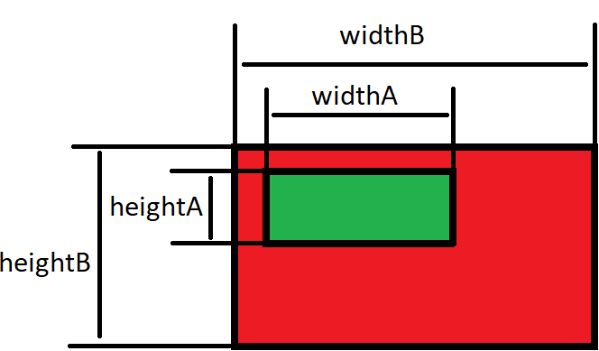

Запуск программы с известными исходными данными
8307
Задача
Пользователь вводит слово (goal). Нужно напечатать на экран фразу "Мы стремимся к " и затем слово от пользователя.
- В классе Program реализуйте публичный статический метод task8307.
- Метод принимает в качестве аргумента 1 строку.
- В теле метода task8307 напечатайте в консоль решение задачи, используя значение аргумента в качестве исходных данных.
Код метода будет выглядеть так:
class Program {
public static void task8307(String value) {//сигнатура метода
String res;
res = "Мы стремимся к " + value;
Console.WriteLine(res);
}
static void Main(string[] args) {
String temp = Console.ReadLine();
task8307(temp);
}
}
Метод - блок кода, содержащий ряд инструкций. Программа инициирует выполнение инструкций вызывая метод и указывая все аргументы, необходимые для этого метода.
Сигнатура метода - части метода, которые нужны для его объявления. На данном этапе обучения будут использоваться следующие элементы:
- public - ключевое слово, необязательное. Модификатор доступа. На данном этапе обучения его наличие или отсутствие ни на что не повлияет.
- static - ключевое слово. На данном этапе обучения обязательно. Объявление методов без него будет рассмотрено в будущих практических.
- void - ключевое слово. На данном этапе обучения обязательно. Объявление методов с альтернативами этому слову будет рассмотрено в будущах практических.
- Имя метода - произвольный текст. Подчиняется правилам именования переменных.
- Параметры (аргументы) метода - заключаются в круглые скобки, выглядят как объявление переменных через запятую. Метод без параметра оформляется с пустыми скобками.
В методе main класса Program добавьте следующий код:
//вызов метода task8307 из класса Library
Library.task8307("знаниям");//литерал "знаниям" передан в качестве аргумента
String goal = "цели";
//значение переменной goal передано в качестве аргумента
Library.task8307(goal);//внутри метода это значение будет доступно под именем value
Library.task8307("результату");
Поместите этот код так, чтобы сначала были вызваны методы с известными аргументами, а потом - с данными, которые ввел пользователь.
В результате запуска программы, в консоли должен появиться текст:
Мы стремимся к знаниям
Мы стремимся к цели
Мы стремимся к результату
8813
Задача
Пользователь вводит фамилию и имя. Нужно оформить фразу по шаблону:
Меня зовут $lastName, $firstName $lastName.
- В классе Library реализуйте публичный статический метод task8813.
- Он принимает в качестве аргумента 2 строки.
- В теле метода task8813 напечатайте в консоль решение задачи, используя значения аргументов в качестве исходных данных.
Сигнатура метода будет выглядеть так:
static void task8813(String firstName, String lastName) {
Вызовите метод task8813 в методе main класса Program с различными аргументами:
Library.task8813("Джеймс", "Бонд");
Library.task8813("капитан", "Джек Воробей");
String firstName = "Александр";
String lastName = "Крюков";
Library.task8813(firstName, lastName);
В результате запуска метода main класса Program, в консоли должен появиться текст:
Меня зовут Бонд, Джеймс Бонд
Меня зовут Джек Воробей, капитан Джек Воробей
Меня зовут Крюков, Александр Крюков
5823
Задача
Пользователь вводит несколько значений. Вывести данный фрагмент текста, заменив названия переменных их значениями.
<circle cx="$CX" cy="$CY" r="$R" fill="$FILL"/>
- В классе Library реализуйте публичный статический метод task5823.
- Он принимает в качестве аргументов 3 целых числа и 1 строку
- В теле метода task5823 напечатайте в консоль решение задачи, используя значение аргументов в качестве исходных данных.
В методе main класса Program добавьте следующий код:
int x = 50;
Library.task5823(x, 50, 40, "yellow");//вызов метода task5823 с аргументами 50, 50, 40, "yellow"
x = 400;
Library.task5823(x, 300, 200, "green");
x = 254;
String colorOrange = "#cc6600";
Library.task5823(x, 356, 100, colorOrange);
В результате запуска метода main класса Program, в консоли должен появиться текст:
<circle cx="50" cy="50" r="40" fill="yellow"/>
<circle cx="400" cy="300" r="200" fill="green"/>
<circle cx="254" cy="356" r="100" fill="#cc6600"/>
2772
Задача
Пользователь вводит несколько значений. Вывести данный фрагмент текста, заменив названия переменных их значениями. $A, $B, $C на введенные значения a, b, c соответственно.
Квадратное уравнение $A*x*x + $B*x + $C = 0.
Его дискриминант вычисляется по формуле: d = $B*$B - 4*$A*$C
- В классе Library реализуйте публичный статический метод task2772.
- Он принимает в качестве аргументов 3 целых числа.
- В теле метода task2772 напечатайте в консоль решение задачи, используя значение аргументов в качестве исходных данных.
В методе main класса Program добавьте следующий код:
Library.task2772(1, 2, 3);
Library.task2772(-3, 0, 2);
В результате запуска метода main класса Program, в консоли должен появиться текст:
Квадратное уравнение 1*x*x + 2*x + 3 = 0.
Его дискриминант вычисляется по формуле: d = 2*2 - 4*1*3
Квадратное уравнение -3*x*x + 0*x + 2 = 0.
Его дискриминант вычисляется по формуле: d = 0*0 - 4*-3*2
4343
Задача
Пользователь вводит несколько значений. Вывести данный фрагмент текста, заменив названия переменных их значениями.
User ID=$USER;Password=$PASS;Host=$HOST;Port=$PORT;Database=$DB;
| Номер теста | Исходные данные | Результат |
|---|
| user | pass | host | port | db |
|---|
| 1 | test | pass | localhost | 5432 | my_db | User ID=test;Password=pass;Host=localhost;Port=5432;Database=my_db; |
| 2 | admin | 7e8efd48d69c | production-node1 | 5432 | bank | User ID=admin;Password=7e8efd48d69c;Host=production-node1;Port=5432;Database=bank; |
| 3 | akryukov | 123 | localhost | dev-node1 | bank | User ID=akryukov;Password=123;Host=localhost;Port=dev-node1;Database=bank; |
6556
Задача
Даны вещественные положительные числа a, b, c, d. Выяснить, можно ли прямоугольник шириной widthA и высотой heightA уместить внутри прямоугольника шириной widthB и высотой heightB. Каждая из сторон одного прямоугольника была параллельна или перпендикулярна каждой стороне второго прямоугольника.

| Номер теста | Исходные данные | Результат |
|---|
| widthA | heightA | widthB | heightB |
|---|
| 1 | 3 | 5 | 7 | 9 | Размещение возможно
|
| 2 | 7 | 1 | 11 | 3 | Размещение возможно
|
| 3 | 1 | 7 | 11 | 3 | Размещение невозможно
|
| 4 | 2 | 13 | 5 | 19 | Размещение возможно
|
| 5 | 13 | 11 | 7 | 19 | Размещение невозможно
|
| 6 | 11 | 13 | 7 | 19 | Размещение невозможно
|
| 7 | 23 | 3 | 9 | 11 | Размещение невозможно
|
| 8 | -2 | 8 | 9 | 7 | Значение A должно быть неотрицательным
|
| 9 | 3 | -4 | 5 | 6 | Значение B должно быть неотрицательным
|
| 10 | 13 | 15 | -17 | 19 | Значение C должно быть неотрицательным
|
| 11 | 6911 | 5881 | 3203 | -4639 | Значение D должно быть неотрицательным
|
3878
Задача
Дана точка с координатами (Xт;Yт) и прямая, проходящая через точки (Xп1;Yп1) (Xп2;Yп2). Точка принадлежит прямой, если истинно выражение:
Xт-Xп1Xп2 - Xп1 = Yт - Yп1Yп2 - Yп1 Вывести на экран сообщение: "Точка принадлежит прямой" или "Точка не принадлежит прямой".
| Номер теста | Исходные данные | Результат |
|---|
| Xт | Yт | Xп1 | Yп1 | Xп2 | Yп2 |
|---|
| 1 | 2 | 2 | 1 | 1 | 3 | 3 | Точка принадлежит прямой
|
| 2 | 1 | 3 | 0 | 0 | 2 | 6 | Точка принадлежит прямой
|
| 3 | 0 | 0 | 1 | 1 | 2 | 2 | Точка принадлежит прямой
|
| 4 | 0 | 1 | 1 | 1 | 2 | 2 | Точка не принадлежит прямой
|
| 5 | 1 | 1 | 1 | 1 | 2 | 2 | Точка принадлежит прямой
|
| 6 | 2 | 2 | 0 | 4 | 4 | 0 | Точка принадлежит прямой
|
| 7 | -1 | 1 | 1 | 1 | 2 | 2 | Точка не принадлежит прямой
|
2375
Задача
Пользователь вводит количество денег на счету и стоимость покупки. Вычесть стоимость покупки из количества денег на счету.
| Номер теста | Исходные данные | Результат |
|---|
| accountRoubles | accountKop | priceRoubles | priceKop |
|---|
| 1 | 3 | 87 | 2 | 89 | Остаток на счету: 0 рублей 98 копеек
|
| 2 | 2 | 87 | 3 | 89 | Остаток на счету: -1 рублей 2 копеек
|
| 3 | 10 | 87 | 3 | 89 | Остаток на счету: 6 рублей 98 копеек
|
| 4 | 2 | 87 | 3 | 45 | Остаток на счету: 0 рублей -58 копеек
|
| 5 | 3 | 57 | 2 | 74 | Остаток на счету: 0 рублей 83 копеек
|
| 6 | 10 | 87 | 3 | 45 | Остаток на счету: 7 рублей 42 копеек
|
| 7 | 4 | 1 | 4 | 80 | Остаток на счету: 0 рублей -79 копеек
|
| 8 | 4 | 80 | 4 | 1 | Остаток на счету: 0 рублей 79 копеек
|
| 9 | 7 | 19 | 7 | 19 | Остаток на счету: 0 рублей 0 копеек
|
Для удобства проверки, вы можете написать ожидаемый результат простым текстом, а следующей строкой - вывести на экран результат запуска метода.
Console.WriteLine("Должно быть: Остаток на счету: 0 рублей -58 копеек"); //здесь пишите текст из тестовых данных
Console.Write("Получилось :");
task2375(2,87,3,45);
Оформите все тестовые случаи таким образом. Таким образом вы сможете быстро увидеть в каких случаях фактический результат отличается от ожидаемого.
Обратите внимание, что ситуаций с неправильными данными может быть значительно больше, чем ситуаций с правильными данными. Код для предотвращения нежелательных ситуаций может получиться объемнее, чем код для решения задачи.
6522
Задача
Смешали volume1 литров воды с температурой temperature1 градусов Цельсия с volume2 литрами воды с температурой temperature2 градусов Цельсия. Вычислите объем volume=volume1+volume2 и температуру образовавшейся смеси по формуле
temperature=
(temperature1*volume1+temperature2*volume2)
volume1+volume2
Оформите результат по шаблону
Объем смеси: $volume л
Температура смеси: $temperature ℃
| Номер теста | Исходные данные | Результат |
|---|
| volume1 | temperature1 | volume2 | temperature2 |
|---|
| 1 | 1 | 30 | 3 | 20 | Объем смеси: 4,0000 л
Температура смеси: 22,5000 °C |
| 2 | 1 | -20 | 10 | 20 | Объем смеси: 11,0000 л
Температура смеси: 16,3636 °C |
| 3 | 5 | 90 | 1 | -10 | Объем смеси: 6,0000 л
Температура смеси: 73,3333 °C |
| 4 | -2 | 10 | 5 | 50 | Объем должен быть неотрицательным
|
| 5 | 4 | 100 | -10 | 4 | Объем должен быть неотрицательным
|
| 6 | 20 | -800 | 20 | 30 | Температура должна быть выше абсолютного нуля (-273.15)
|
| 7 | 20 | 10 | 30 | -500 | Температура должна быть выше абсолютного нуля (-273.15)
|
| 8 | -7 | -1000 | 6 | 71 | Объем должен быть неотрицательным
Температура должна быть выше абсолютного нуля (-273.15)
|
| 9 | 15 | -180 | -21 | 90 | Объем должен быть неотрицательным
|
| 10 | 31 | 10 | -2 | -300 | Объем должен быть неотрицательным
Температура должна быть выше абсолютного нуля (-273.15)
|
| 11 | -7 | -1000 | -21 | 71 | Объем должен быть неотрицательным
Объем должен быть неотрицательным
Температура должна быть выше абсолютного нуля (-273.15)
|
| 12 | 15 | -180 | -21 | -300 | Объем должен быть неотрицательным
Температура должна быть выше абсолютного нуля (-273.15)
|
| 13 | -7 | -400 | -5 | -500 | Объем должен быть неотрицательным
Объем должен быть неотрицательным
Температура должна быть выше абсолютного нуля (-273.15)
Температура должна быть выше абсолютного нуля (-273.15)
|
| 14 | 0 | 30 | 3 | 20 | Объем должен быть неотрицательным
|
| 15 | 5 | 90 | 0 | 40 | Объем должен быть неотрицательным
|
Представьте, что вы пишете программное обеспечение для банкомата. Полезным действием будет выдача банкнот. Пользователь пришел к банкомату, вставил карту, увидел что на счету 10 тысяч, нажал 'снять деньги' и ввел миллион. Банкомат выдал ему миллион, а затем написал сообщение 'недостаточно средств на счету'. Правильно ли действовал банкомат? Именно поэтому мы проверяем исходные данные перед тем, как совершаем полезные действия.
7619
Задача
Два автомобиля едут навстречу друг другу с постоянными скоростями velocity1 и velocity2 км/час. Определить, через какое время автомобили встретятся, если расстояние между ними было distance км.
| Номер теста | Исходные данные | Результат |
|---|
| velocity1 | velocity2 | distance |
|---|
| 1 | 31 | 47 | 6833 | Автомобили встретятся через 87,6026 часов |
| 2 | 0 | 7 | 6829 | Автомобили встретятся через 975,5714 часов |
| 3 | 6 | 0 | 100 | Автомобили встретятся через 16,6667 часов |
| 4 | 17 | 19 | 0 | Автомобили встретятся через 0,0000 часов |
| 5 | -11 | 13 | 200 | Скорость должна быть неотрицательна
|
| 6 | 79 | -67 | 400 | Скорость должна быть неотрицательна
|
| 7 | 10 | 20 | -500 | Расстояние должно быть неотрицательным
|
| 8 | -20 | -73 | 300 | Скорость должна быть неотрицательна
Скорость должна быть неотрицательна
|
| 9 | 60 | -120 | -600 | Скорость должна быть неотрицательна
Расстояние должно быть неотрицательным
|
| 10 | -2 | -3 | -1 | Скорость должна быть неотрицательна
Скорость должна быть неотрицательна
Расстояние должно быть неотрицательным
|
4913
Задача
Даны координаты aX и aY исходной точки, горизонтальное проложение между точками (длина линии, distance) и дирекционный угол angle, выраженный в градусах. Решите прямую геодезическую задачу - определите координаты другого конца отрезка.
- Приращение координаты x по формуле dX = distance * cos(angleRad)
- Приращение координаты y по формуле dY = distance * sin(angleRad)
- Координату Xb другой точки по формуле bx = ax + dX.
- Координату Yb другой точки по формуле by = ay + dY
Выведите на экран приращение координат dx и dy, а также координаты Xb и Yb другой точки с точностью 4 знака после запятой по шаблону.
Приращение координат: dX = $dx; dY = $dy
Координаты второй точки ($bx;$by)
| Номер теста | Исходные данные | Результат |
|---|
| ax | ay | distance | angleDeg |
|---|
| 1 | 1 | 2 | 5 | 30 | Приращение координат: dX = 4,3301 dY = 2,5000
Координаты второй точки (5,3301;4,5000)
|
| 2 | 7 | 11 | 13 | 110 | Приращение координат: dX = -4,4463 dY = 12,2160
Координаты второй точки (2,5537;23,2160)
|
| 3 | 17 | 19 | 23 | 230 | Приращение координат: dX = -14,7841 dY = -17,6190
Координаты второй точки (2,2159;1,3810)
|
| 4 | 29 | 31 | 3 | 290 | Приращение координат: dX = 1,0261 dY = -2,8191
Координаты второй точки (30,0261;28,1809)
|
| 5 | 33 | 37 | 10 | 90 | Приращение координат: dX = 0,0000 dY = 10,0000
Координаты второй точки (33,0000;47,0000)
|
| 6 | 33 | 37 | 10 | 180 | Приращение координат: dX = -10,0000 dY = 0,0000
Координаты второй точки (23,0000;37,0000)
|
| 7 | 33 | 37 | 10 | 270 | Приращение координат: dX = -0,0000 dY = -10,0000
Координаты второй точки (33,0000;27,0000)
|
| 8 | 33 | 37 | 10 | 360 | Приращение координат: dX = 10,0000 dY = -0,0000
Координаты второй точки (43,0000;37,0000)
|
| 9 | 1 | 2 | 10 | 0 | Приращение координат: dX = 10,0000 dY = 0,0000
Координаты второй точки (11,0000;2,0000)
|
| 10 | 1 | 2 | -5 | 45 | Горизонтальное проложение линии должно быть положительно
|
| 11 | 1 | 2 | 0 | 45 | Горизонтальное проложение линии должно быть положительно
|
| 12 | 1 | 2 | 10 | -5 | Угол должен быть неотрицательным
|
9130
Задача
Определить силу тяжести, которая действует на спутник массой satelliteMass, поблизости от планеты массой planetMass и радиусом radius.
force=g
planetMass*satelliteMass
radius2
, где g -
ускорение свободного падения, приблизительно равное 9,8067. Результат вывести по шаблону
На спутник действует сила тяжести $force Ньютон
Обратите внимание, что масса планеты дана в научной нотации. В некоторых источниках это называется экспоненциальной записью
(ссылка на страницу Википедии). Этот формат по-умолчанию поддерживается обычными командами ввода действительных чисел. Для того, чтобы вывести на экран число в такой нотации в Java нужно применить команду:
System.out.printf("На спутник действует сила тяжести %e Ньютон\n", force);
В C# команда будет выглядеть так:
Console.WriteLine("На спутник действует сила тяжести {0:E} Ньютон", force);
| Номер теста | Исходные данные | Результат |
|---|
| planetMass | satelliteMass | radius |
|---|
| 1 | 5.972E24 | 10000 | 6371 | На спутник действует сила тяжести 1,442871e+22 Ньютон
|
| 2 | 6.39E23 | 10000 | 3396.2 | На спутник действует сила тяжести 5,432969e+21 Ньютон
|
| 3 | 6.39E23 | 15000 | 3396.2 | На спутник действует сила тяжести 8,149454e+21 Ньютон
|
| 4 | 6.39E23 | 15000 | -20000 | Радиус планеты должен быть положительным
|
| 5 | 6.39E23 | -2000 | 3396.2 | Масса спутника должна быть положительна
|
| 6 | -6.39E23 | 10000 | 3396.2 | Масса планеты должна быть положительна
|
2361
Задача
Дан рулон материала длиной totalM метров. Расход материала на одно изделие - partCm сантиметров материала. Вычислите сколько изделий получится изготовить и сколько материала останется. Оформите результат по шаблону:
Длина рулона в сантиметрах равна $totalCm
Из этого материала получится $amount изделий и останется $remainder см
| Номер теста | Исходные данные | Результат |
|---|
| totalM | partCm |
| 1 | 400 | 17 | Длина рулона в сантиметрах равна 40000
Из этого материала получится 2352 изделий и останется 16 см
|
| 2 | 103 | 29 | Длина рулона в сантиметрах равна 10300
Из этого материала получится 355 изделий и останется 5 см
|
| 3 | 2 | 12 | Длина рулона в сантиметрах равна 200
Из этого материала получится 16 изделий и останется 8 см
|
| 4 | 2 | 313 | Длина рулона в сантиметрах равна 200
Материала не хватат даже на одно изделие
|
| 5 | 3 | 400 | Длина рулона в сантиметрах равна 300
Материала не хватат даже на одно изделие
|
| 6 | 300 | -70 | Расход материала должен быть положительным
Длина рулона в сантиметрах равна 30000
|
| 7 | 5 | -10 | Расход материала должен быть положительным
Длина рулона в сантиметрах равна 500
|
| 8 | 11 | 0 | Расход материала должен быть положительным
Длина рулона в сантиметрах равна 1100
|
| 9 | -800 | 20 | Длина рулона должна быть положительна
|
| 10 | 0 | 23 | Длина рулона должна быть положительна
|
7243
Задача
Даны две ёмкости объемом 5 и 8 литров. Пользователь вводит два целых числа - фактическое количество воды в них. Определить, сколько воды получится в этих ёмкостях при переливании из маленькой в большую. Переливание происходит "до краев". Излишки остаются в маленькой ёмкости. Ответ оформить по шаблону:
Было в маленькой $small из 5, в большой $large из 8
Стало в маленькой $resultSmall из 5, в большой $resultLarge из 8
| Номер теста | Исходные данные | Результат |
|---|
| small | large |
| 1 | 5 | 8 | Было: в маленькой 5 из 5, в большой 8 из 8
Стало: в маленькой 5 из 5, в большой 8 из 8 |
| 2 | 0 | 0 | Было: в маленькой 0 из 5, в большой 0 из 8
Стало: в маленькой 0 из 5, в большой 0 из 8 |
| 3 | 5 | 0 | Было: в маленькой 5 из 5, в большой 0 из 8
Стало: в маленькой 0 из 5, в большой 5 из 8 |
| 4 | 5 | 1 | Было: в маленькой 5 из 5, в большой 1 из 8
Стало: в маленькой 0 из 5, в большой 6 из 8 |
| 5 | 5 | 3 | Было: в маленькой 5 из 5, в большой 3 из 8
Стало: в маленькой 0 из 5, в большой 8 из 8 |
| 6 | 5 | 4 | Было: в маленькой 5 из 5, в большой 4 из 8
Стало: в маленькой 1 из 5, в большой 8 из 8 |
| 7 | 4 | 5 | Было: в маленькой 4 из 5, в большой 5 из 8
Стало: в маленькой 1 из 5, в большой 8 из 8 |
| 8 | 3 | 7 | Было: в маленькой 3 из 5, в большой 7 из 8
Стало: в маленькой 2 из 5, в большой 8 из 8 |
| 9 | -1 | 2 | Фактическое количество жидкости в маленькой емкости должно быть от 0 до 5 литров включительно
|
| 10 | 20 | 3 | Фактическое количество жидкости в маленькой емкости должно быть от 0 до 5 литров включительно
|
| 11 | 1 | -4 | Фактическое количество жидкости в большой емкости должно быть от 0 до 8 литров включительно
|
| 12 | 2 | 19 | Фактическое количество жидкости в большой емкости должно быть от 0 до 8 литров включительно
|
8135
Задача
Пользователь вводит вещественные числа a, b, c. Оформить квадратное уравнение с учетом знаков. В результате не должно быть знаков + и - рядом. Если какой-то из множителей равен 1, то он не пишется. Если какой-то из множителей равен 0, то все слагаемое не пишется.
| Номер теста | Исходные данные | Результат |
|---|
| a | b | c |
|---|
| 1 | 5 | 2 | 3 | 5*x^2 +2*x +3 = 0
|
| 2 | -2 | 2 | 3 | -2*x^2 +2*x +3 = 0
|
| 3 | 1 | 2 | 3 | x^2 +2*x +3 = 0
|
| 4 | -1 | 2 | 3 | -1*x^2 +2*x +3 = 0
|
| 5 | 0 | 2 | 3 | 2*x +3 = 0
|
| 6 | 5 | 1 | 7 | 5*x^2 +x +7 = 0
|
| 7 | 5 | -1 | 7 | 5*x^2 -1*x +7 = 0
|
| 8 | 5 | -3 | 7 | 5*x^2 -3*x +7 = 0
|
| 9 | 5 | 0 | 7 | 5*x^2 +7 = 0
|
| 10 | 5 | 3 | -4 | 5*x^2 +3*x -4 = 0
|
| 11 | 5 | 3 | -1 | 5*x^2 +3*x -1 = 0
|
| 12 | 5 | 3 | 1 | 5*x^2 +3*x +1 = 0
|
| 13 | 5 | 3 | 0 | 5*x^2 +3*x = 0
|
Для удобства проверки, вы можете оформить ответ в виде:
Должно быть: 5*x^2 -3*x +7 = 0 //здесь пишите текст из тестовых данных
Получилось : 5*x^2 -3*x +7 = 0//здесь расположите результат вызова метода
Оформите все тестовые случаи таким образом. Таким образом вы сможете быстро увидеть в каких случаях фактический результат отличается от ожидаемого.
6896
Задача
Даны две ёмкости объемом 5 и 8 литров. Пользователь вводит два целых числа - фактическое количество воды в них. Затем нужно вывести пользователю список возможных действий:
- Налить из крана в маленькую ёмкость
- Налить из крана в большую ёмкость
- Налить из маленькой ёмкости в большую
- Налить из большой ёмкости в маленькую
- Вылить из маленькой ёмкости в раковину
- Вылить из большой ёмкости в раковину
После этого пользователь вводит еще одно число - номер действия. Определить, сколько воды получится в этих ёмкостях после выполнения действия с указанным номером. Переливание происходит "до краев". Излишки остаются в исходной ёмкости.
| Номер теста | Исходные данные | Результат |
|---|
| small | large | action |
|---|
| 1 | 5 | 8 | 1 | Было: в маленькой 5 из 5, в большой 8 из 8
Выбрано действие: 1
Стало: в маленькой 5 из 5, в большой 8 из 8
|
| 2 | 0 | 8 | 1 | Было: в маленькой 0 из 5, в большой 8 из 8
Выбрано действие: 1
Стало: в маленькой 5 из 5, в большой 8 из 8
|
| 3 | 5 | 8 | 2 | Было: в маленькой 5 из 5, в большой 8 из 8
Выбрано действие: 2
Стало: в маленькой 5 из 5, в большой 8 из 8
|
| 4 | 5 | 0 | 2 | Было: в маленькой 5 из 5, в большой 0 из 8
Выбрано действие: 2
Стало: в маленькой 5 из 5, в большой 8 из 8
|
| 5 | 3 | 7 | 3 | Было: в маленькой 3 из 5, в большой 7 из 8
Выбрано действие: 3
Стало: в маленькой 2 из 5, в большой 8 из 8
|
| 6 | 2 | 5 | 3 | Было: в маленькой 2 из 5, в большой 5 из 8
Выбрано действие: 3
Стало: в маленькой 0 из 5, в большой 7 из 8
|
| 7 | 2 | 6 | 4 | Было: в маленькой 2 из 5, в большой 6 из 8
Выбрано действие: 4
Стало: в маленькой 5 из 5, в большой 3 из 8
|
| 8 | 1 | 3 | 4 | Было: в маленькой 1 из 5, в большой 3 из 8
Выбрано действие: 4
Стало: в маленькой 4 из 5, в большой 0 из 8
|
| 9 | 3 | 8 | 5 | Было: в маленькой 3 из 5, в большой 8 из 8
Выбрано действие: 5
Стало: в маленькой 0 из 5, в большой 8 из 8
|
| 10 | 0 | 8 | 5 | Было: в маленькой 0 из 5, в большой 8 из 8
Выбрано действие: 5
Стало: в маленькой 0 из 5, в большой 8 из 8
|
| 11 | 5 | 7 | 6 | Было: в маленькой 5 из 5, в большой 7 из 8
Выбрано действие: 6
Стало: в маленькой 5 из 5, в большой 0 из 8
|
| 12 | 5 | 0 | 6 | Было: в маленькой 5 из 5, в большой 0 из 8
Выбрано действие: 6
Стало: в маленькой 5 из 5, в большой 0 из 8
|
| 13 | -1 | 6 | 1 | Фактическое количество жидкости в маленькой емкости должно быть от 0 до 5 литров включительно
|
| 14 | 20 | 6 | 1 | Фактическое количество жидкости в маленькой емкости должно быть от 0 до 5 литров включительно
|
| 15 | 3 | -2 | 1 | Фактическое количество жидкости в большой емкости должно быть от 0 до 8 литров включительно
|
| 16 | 3 | 19 | 1 | Фактическое количество жидкости в большой емкости должно быть от 0 до 8 литров включительно
|
| 17 | 3 | 4 | 0 | Было: в маленькой 3 из 5, в большой 4 из 8
Выбрано действие: 0
Номер действия должен быть цифрой от 1 до 6
Стало: в маленькой 3 из 5, в большой 4 из 8
|
| 18 | 2 | 3 | 7 | Было: в маленькой 2 из 5, в большой 3 из 8
Выбрано действие: 7
Номер действия должен быть цифрой от 1 до 6
Стало: в маленькой 2 из 5, в большой 3 из 8
|
Версия 20240202. Подборка задач, выбор порядка подачи и подготовка тестовых данных - Крюков Александр, Омск 2013-2024. Основной репозиторий